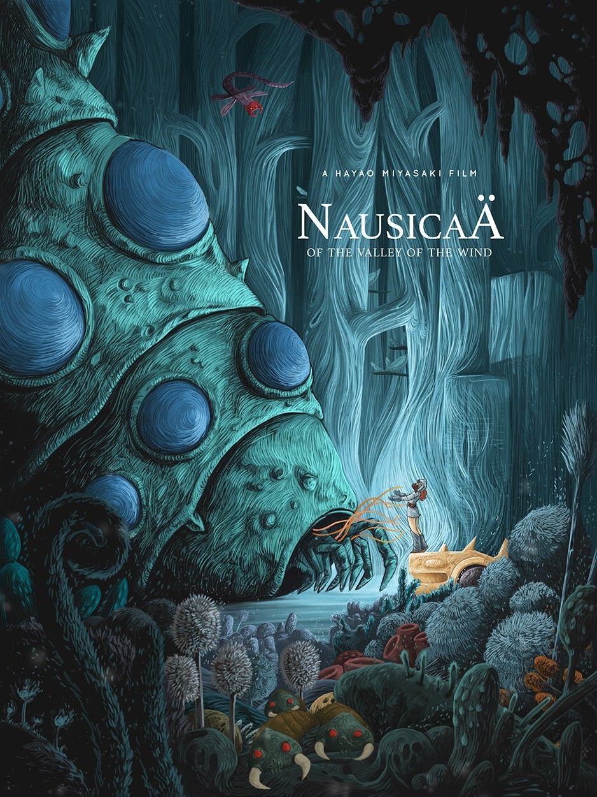
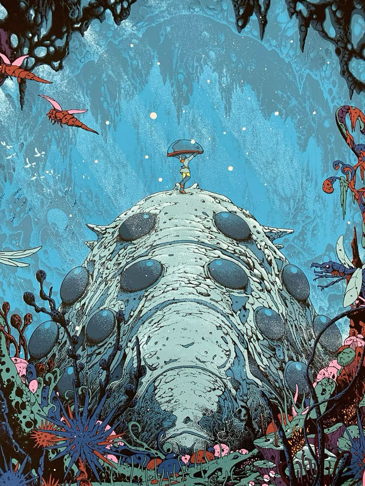
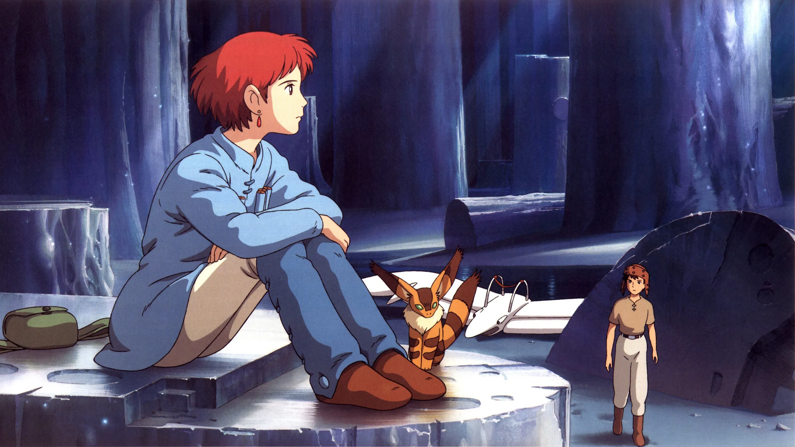
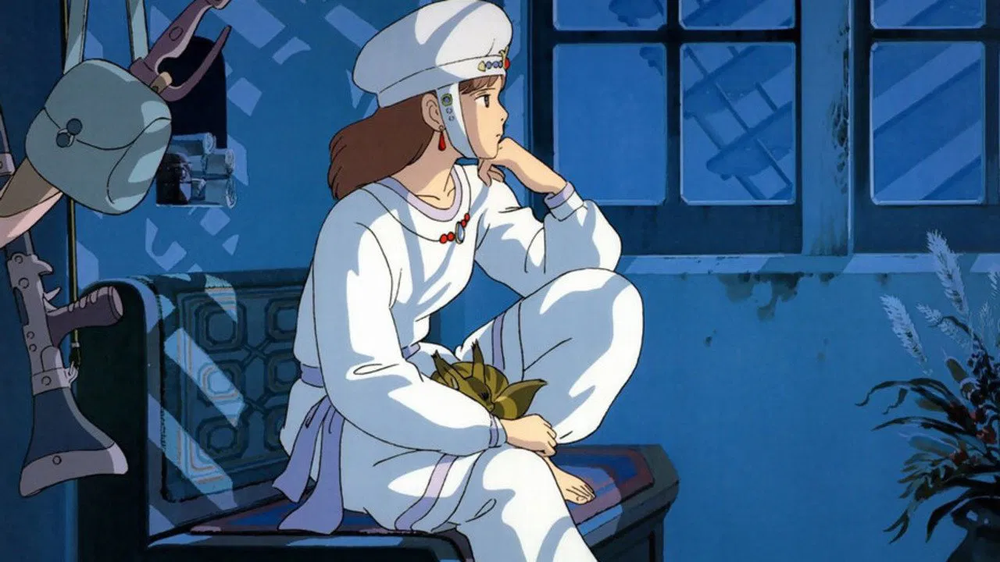
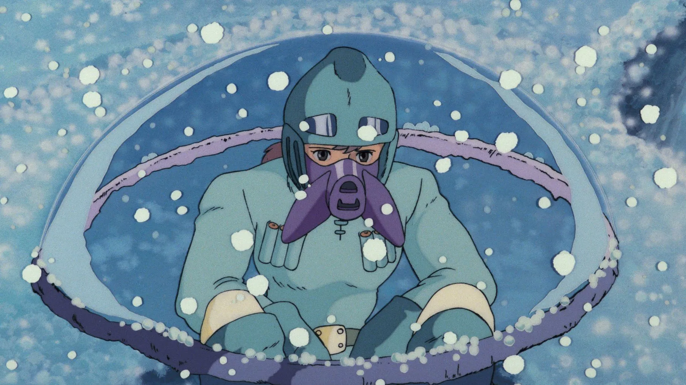

Personajes Icónicos
Nausicaä
Princesa del Valle del Viento, y está vagamente basada en la princesa griega de la Odisea que ayudó a Odiseo (Nausícaa). Está también inspirado en la Princesa que amaba los insectos, una historia tradicional japonesa de la Era Heian. Aun siendo una hábil luchadora, Nausicaä es también una amante de la paz y la vida.
    